Festival de Berck
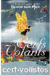
Berck, c'est géant, comme Dieppe, mais dans une autre atmosphère : moins exotique, un peu moins administrative (on peut planter les tentes dans les surfaces...) mais avec la plage et beaucoup de place. Evidemment, comme tous les grands festivals, c'est peu à peu dominé par les grands gonflables pendus à des flow-forms et qui bouffent (physiquement et moralement) la place des "vrais" cerfs-volants... Mais le public veut ça, bon, on fera avec !

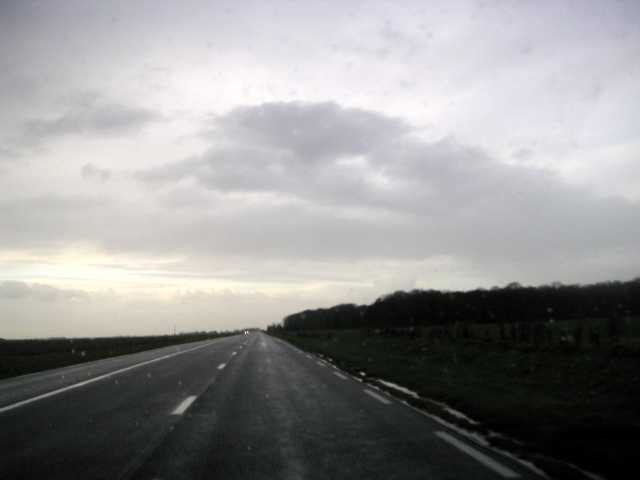
Vendredi, j'arrive à Berck. Temps affreux, mais un petit trou de ciel bleu là-bas : c'est Berck ! Heureux présage !

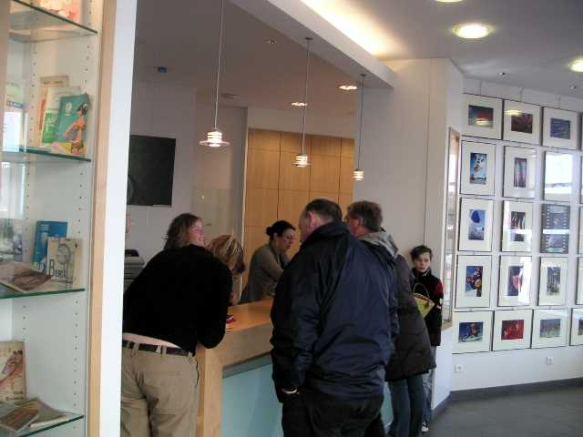
Samedi, accueil chaleureux à l'Office du Tourisme, remise de tous les impedimenta par les charmantes de l'organisation.

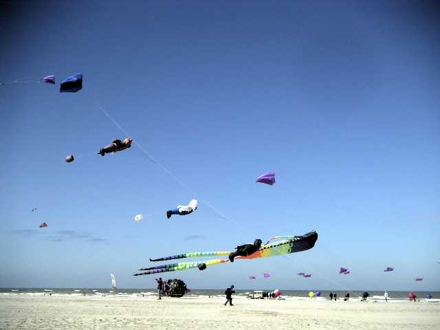
Le vent est fort et la température très faible. On grelotte, mais les courageux commencent à monter leurs machines.

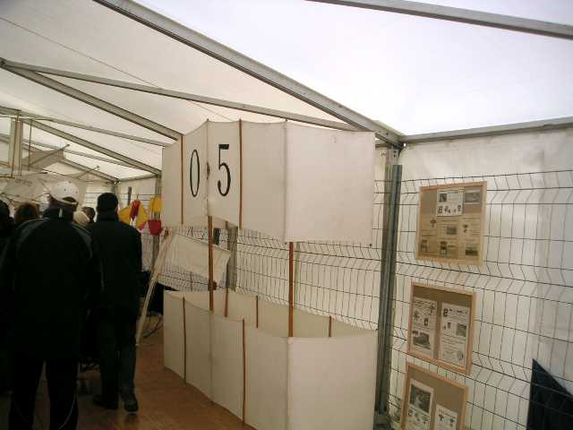
Pour se réchauffer, petit tour dans les tentes-expositions. Celle des cerfs-volants anciens contient plein de choses que je n'avais jamais vues en réel, comme ce "05" en coton et bois.

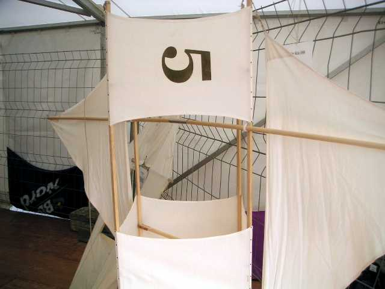
Ou ce 5 genre Plano de même matière, mais avec une boite en losange au centre.

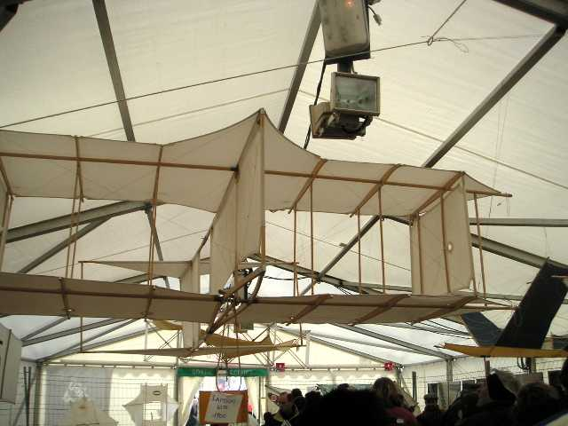
Mais celui que je préfère, surtout pour le travail du bois et le look général, c'est cette machine qui préfigure les avions biplans, avec ses mâts entre les ailes, ses haubans en croix, etc...

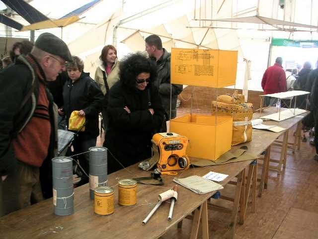
On trouve aussi cet ensemble complet de paquetage de survie des aviateurs anglais avec la radio et ses porte-antennes : un ballon gonflable avec ses "générateurs d'hydrogène" et le cerf-volant "Gibson Girl" avec le mode d'emploi complet.

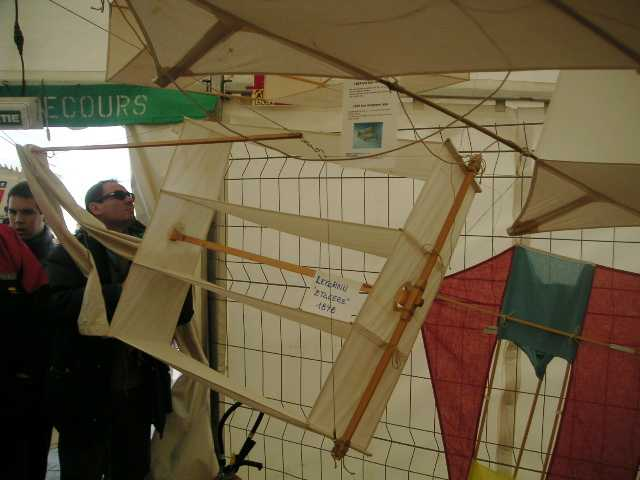
Revenons au civil avec les étagères Lecornu, même pas du siècle dernier !

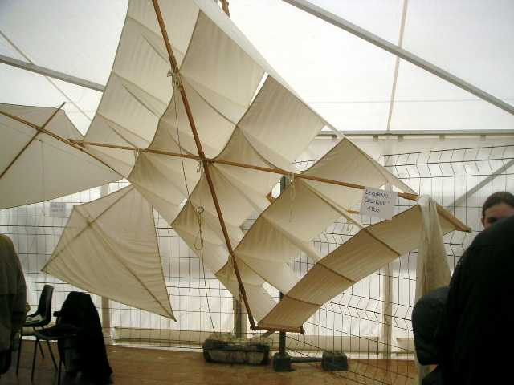
Et cet "Oblique" avec lequel on a fait de la photo aérienne.

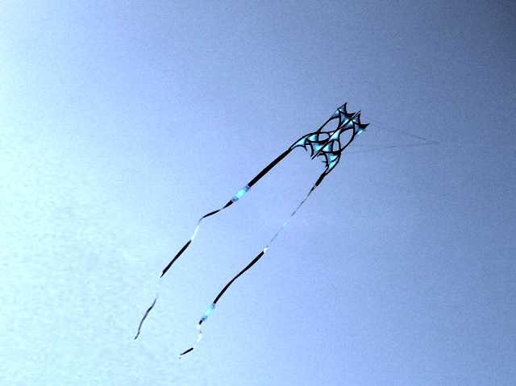
Mais ça souffle toujours fort. On voit pourtant des cerfs-volants pas mal !

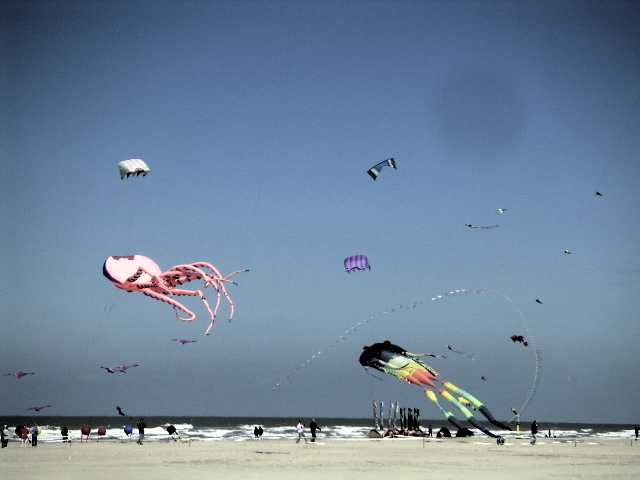
Faisant face à la mer encore très gonflée, la pieuvre et le trilobite-mégabite mettent à contribution leurs flow-forms !

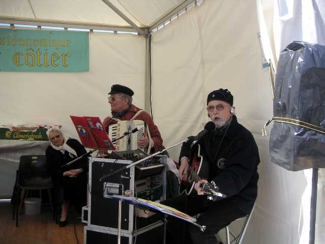
Dans les tentes, pendant ce temps, la chorale des anciens pêcheurs de hareng ne mollit pas !

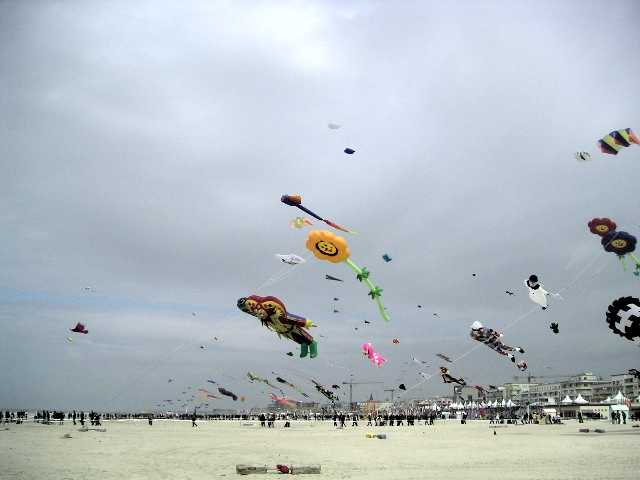
Mais petit à petit, la prestation prend quand même du volume, avec des gonflables, des cerfs-volants vrais, des méga-queues et toutes les inventions de l'hiver.

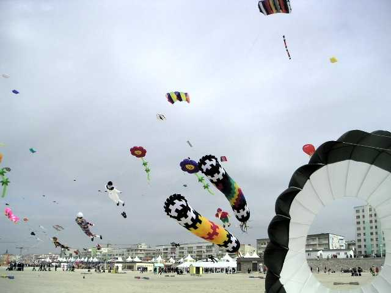
Même des bols et des manches à air splendides !

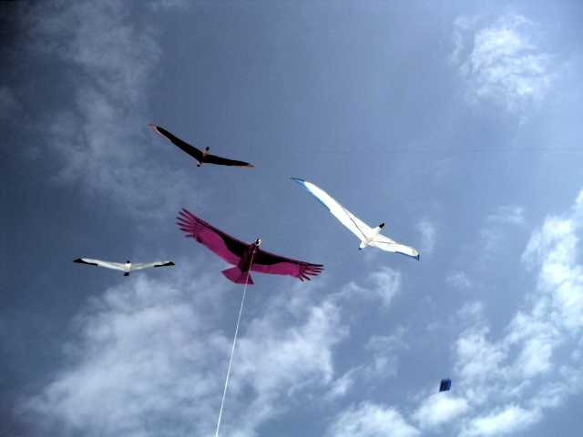
Un petit show d'oiseaux, tous de 6 m d'envergure : Albatros de moi, des Mouchague, de Jean-Marc, avec ma dernière création : le Condor (un travail de 2 ans - enfin pas en continu) !
(bientôt une présentation du Condor dans la rubrique "cerfs-volants récents", mais pas tout de suite)...

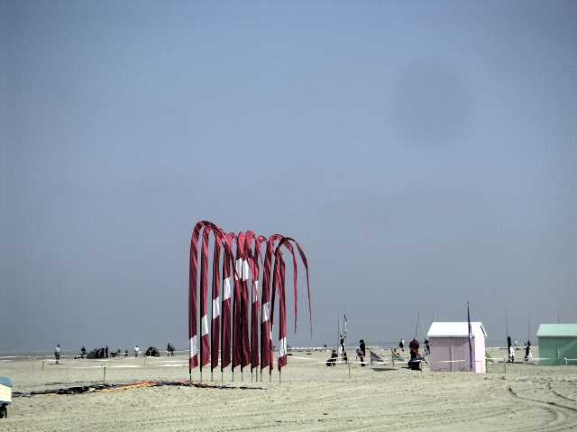
Et puis, il y a des jours de pétole, même les bannières les plus légères cessent de frimer !

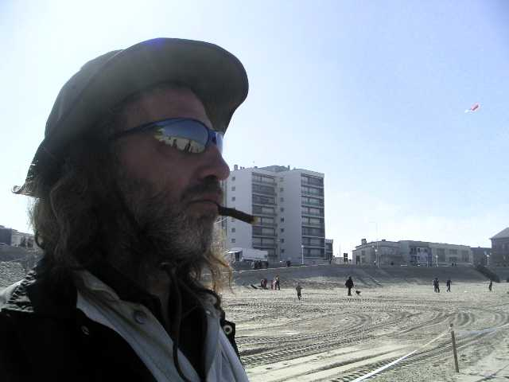
Dans l'attente, Marco scrute la mer comme Christophe Colomb ayant oublié son rasoir et cherchant l'Amérique.

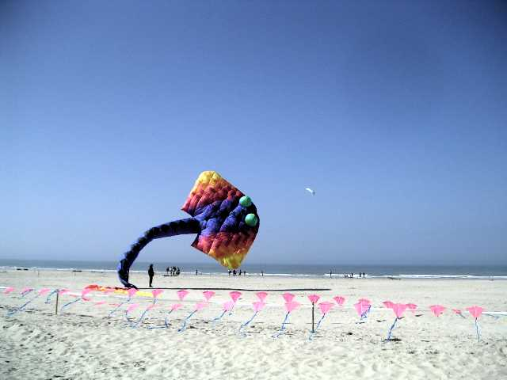
Ca reprend un peu, les arches se décollent du sol et Peter Lynn arrive à lancer sa raie Manta mais elle rechigne manifestement au boulot !

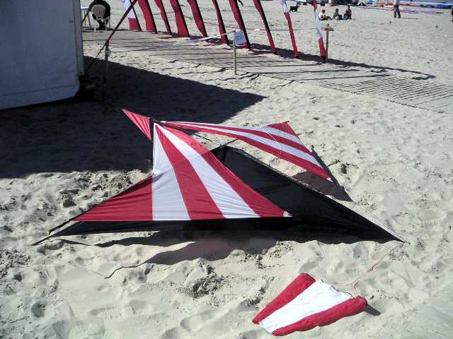
Mais cet original cerf-volant, à 2 niveaux de voilure, très stable en vol, a besoin d'un peu plus d'air pour prendre sa liberté.

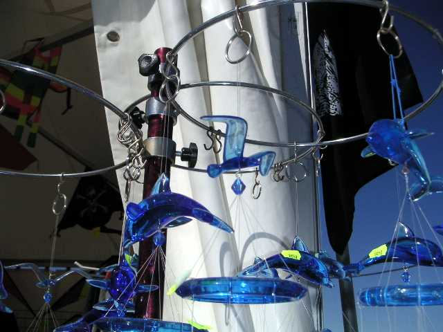
Sur la promenade, on visite encore beaucoup les marchands du Temple. Ils proposent même des albatros qui, ceux-là, ne voleront jamais !

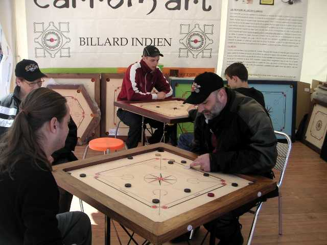
Chapitre des jeux : billards indiens où il s'agit, avec un palet acteur lancé d'une chiquenaude, de rentrer les autres dans les trous.

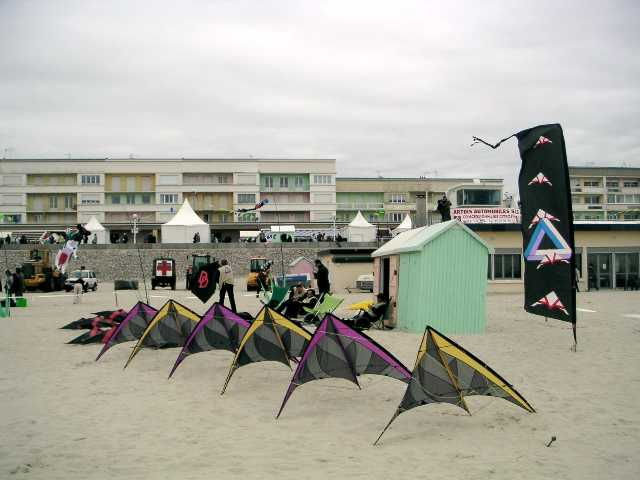
Le team Impossible a posé ses pilotables, mais dressé sa bannière au triangle "impossible", et Dédé va faire voler son nouveau Rokkaku Rolls-Royce "RR". Ah non, c'est "DD" ! Pas de chance, il n'y a pas eu de combats de la chose...

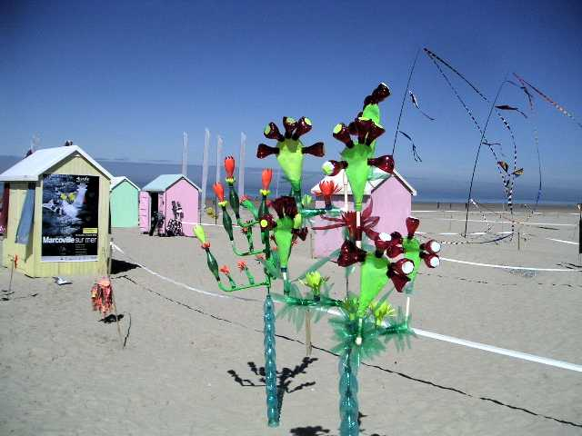
Fernando a amélioré ses cactus qui arborent maintenant comme les vrais des figues rouges. Il prétend même avoir vu un bourdon chercher à les butiner !

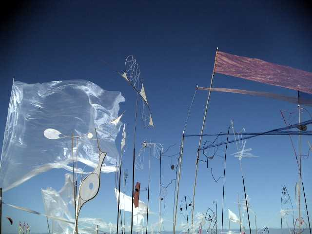
D'esthétiques jardins arachnéens. Je crois que c'est à Ulla et pas à Thérèse. Celle-ci a aussi tenu un stand de création en direct dans une tente (au vu de la météo, elle a été bien inspirée !).

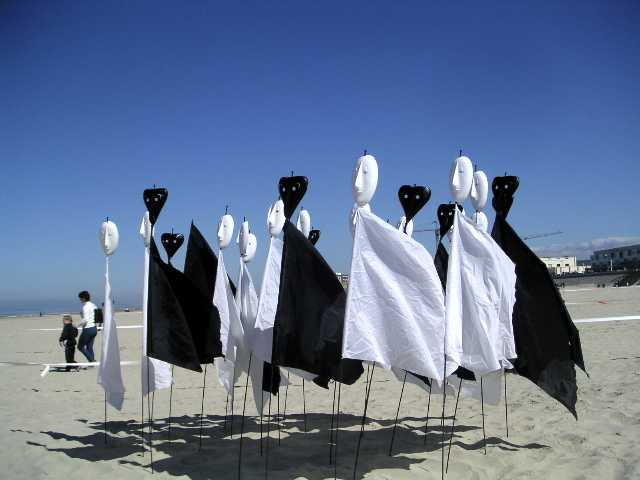
Les Mouchague ont ramené leurs impressionnants masques vénitiens.

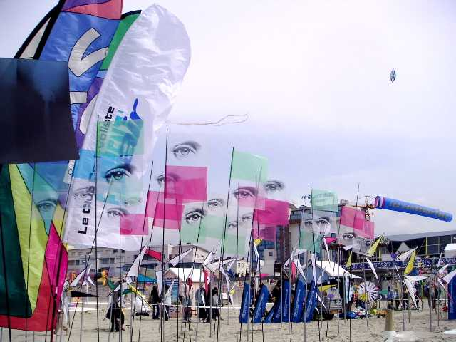
Leurs "yeux" vous poursuivent aussi de façon obsédante...

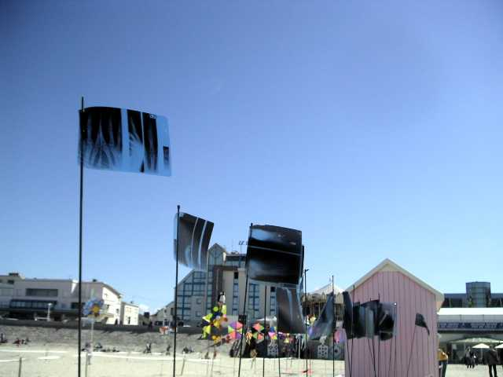
Et les radios de toutes les fractures de leur copains complètent le tableau !

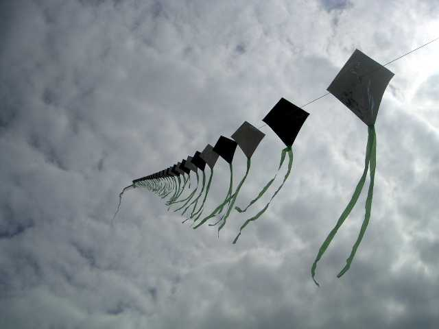
Pendant ce temps, même si la température n'est pas montée, le vent, lui, a forci et ça revole ferme ! Le train de Eddies serpente dans l'espace encore libre...

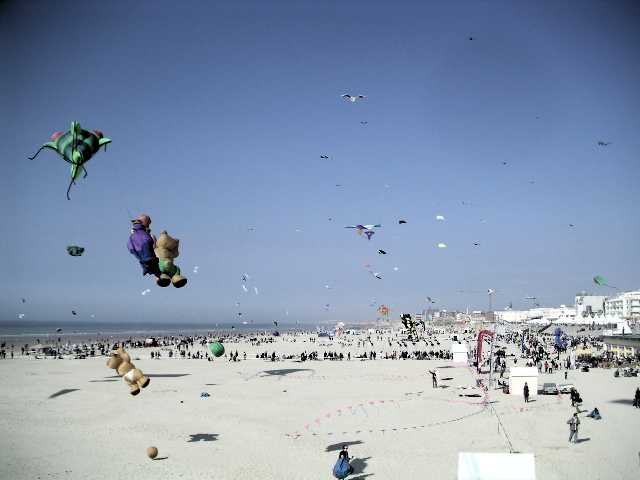
Mais tout le monde s'est maintenant lancé ! Cette vue aérienne montre l'immensité de la plage et les nombreux terrains réservés.

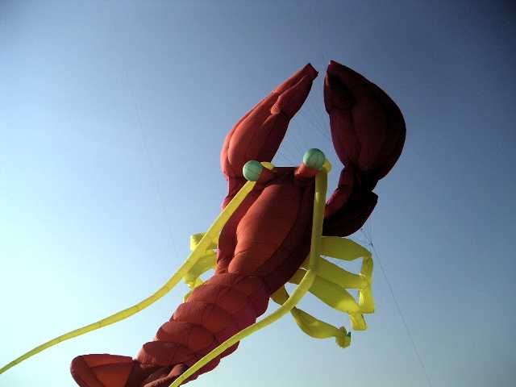
On voit même les homards décoller, malgré une surface relativement limitée et de forme peu porteuse.

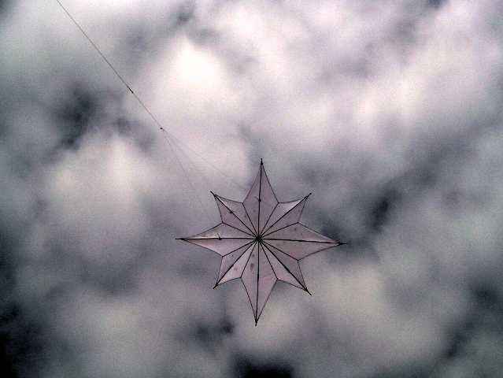
Cette étoile me plaît beaucoup dans sa simplicité apparente, même si sa visualisation sur ce ciel n'est pas optimale (c'est pareil pour mes oiseaux blancs, mais j'ai pris soin de marquer les extrémités de couleurs contrastées...).

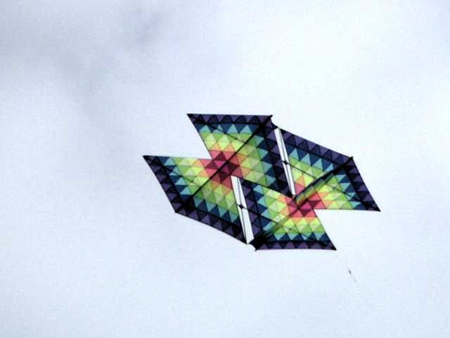
Ce plan Pellybox aux couleurs irisées n'est pas mal non plus.

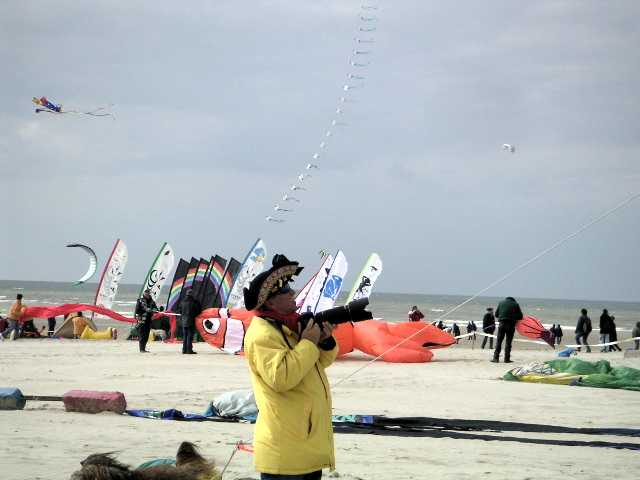
Les photographes envahissent les terrains. Celui-ci a un chapeau de soleil d'une autre époque, à moins que ce ne soit aussi un casque protecteur ?

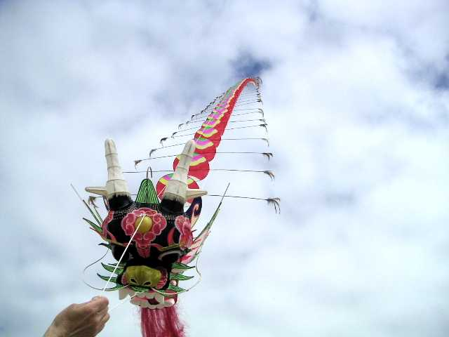
Mais un dragon chinois, ça vole toujours.

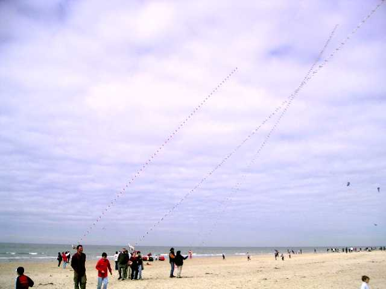
Même à quatre (trois sur la photo) les dragons tiennent l'air impeccablement, raides comme la justice et sans se mélanger.

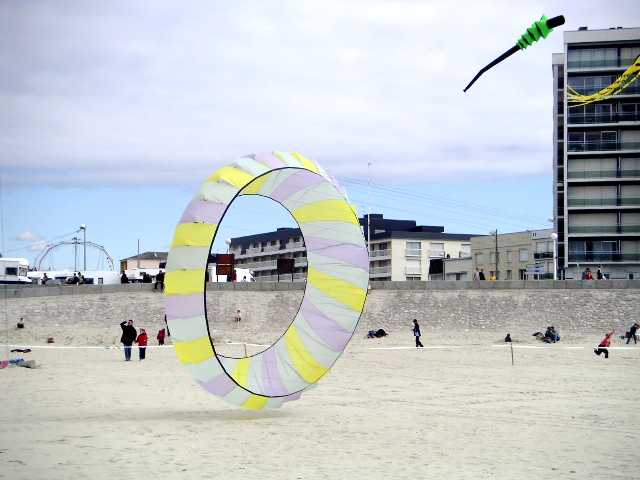
Ici, un bol un peu spécial, très fermé. Les godets pour la rotation restent à l'avant. Apparemment, cela ne change rien sur le fonctionnement. On pourrait sans doute faire carrément une sphère avec l'avant ouvert.

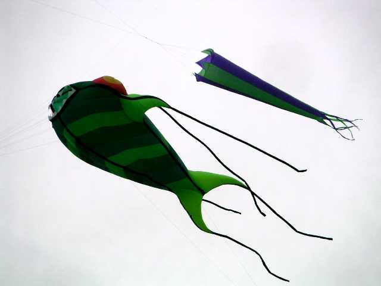
Peter Lynn a encore frappé avec ce poisson vert qui a une esthétique certaine. Je crois que les Awita en ont acheté un, je vous dirai pas le prix.

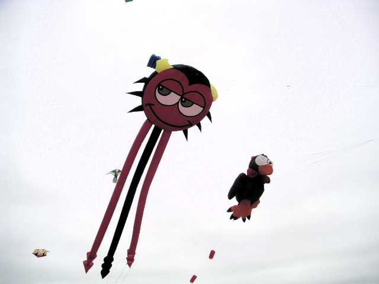
Un SMILE ? je ne sais pas le nom que lui a donné l'auteur, peut-être un démon familier. Vol impeccable, demande quand même pas mal de vent.

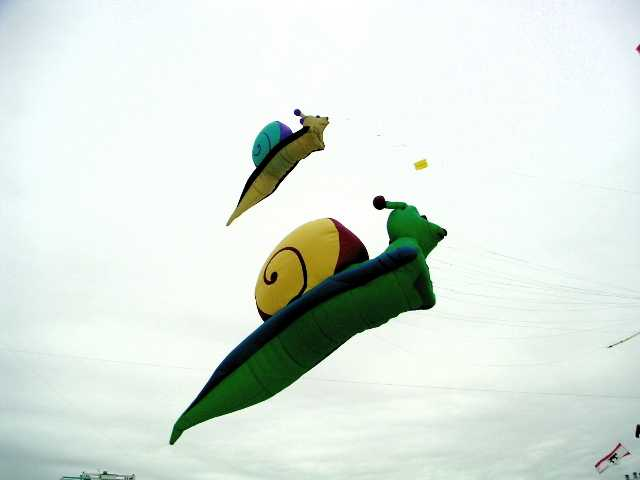
Les escargots se gonflent bien, ici, même si on ne peut vraiment pas dire qu'ils ont une portance les qualifiant dans la catégorie cerf-volant...

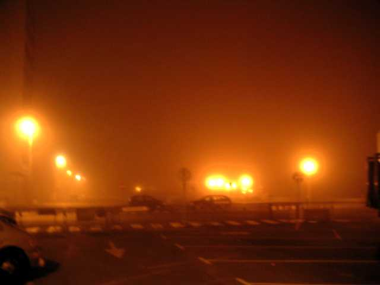
Mardi soir, brume au moment de se coucher. Cela n'annonce rien de bon pour le lendemain...

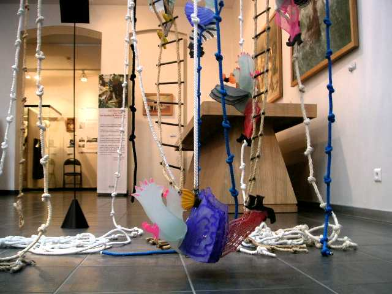
C'était sûr, mercredi matin il tombe des cordes, comme d'ailleurs mercredi soir et jeudi matin jusqu'à 17 heures, ce qui fait long. Alors, après avoir attendu pas mal que ça se lève, on va visiter le musée ouvert pour nous. Un artiste verrier assemble du verre pour faire des personnages comme cette artiste de cirque...

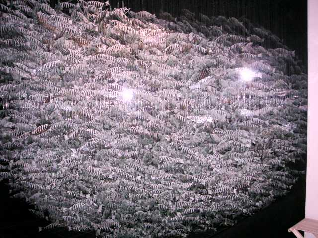
...ou des poissons. Pour faire ce splendide banc, il a suspendu chacun à un fil nylon, ça bouge et tintinnabule (je savais bien que je le replacerais) sans arrêt ! Petit détail, il y aurait 9500 poissons dans le banc...

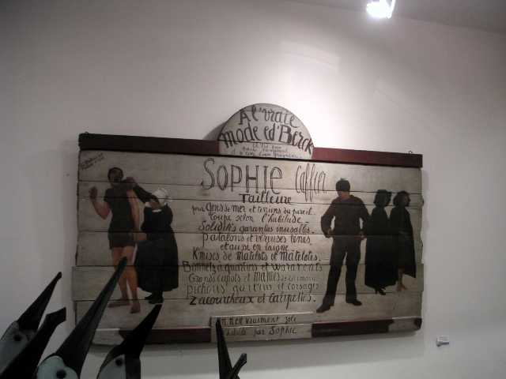
Il y a aussi du folklore local comme cette enseigne de "tailleure" ! Les pingouins, à gauche, en verre aussi, essayent vainement de lire...

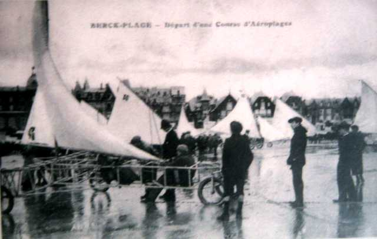
On retrouve même des illustrations liées au vent, comme ces "aéroplages" de course quasi-modernes sauf que le plan est inversé et la voile très basse. Mais il y a un foc, la gestion ne devait pas être du gâteau !

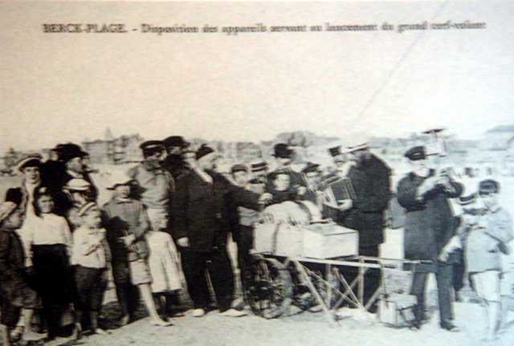
Il y a même un treuil à cerfs-volants, sans doute pour des cerfs-volants très costauds. Peter Lynn devrait copier ça. Il semble qu'on prépare un appareil photo pour accrocher dessous ?

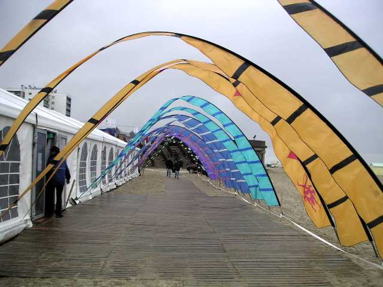
Bon, la déco de la tente VIP, ça va, mais la météo ne veut pas s'arranger... (les VIPs, c'est aussi les cervolistes, bien sûr, c'est normal).

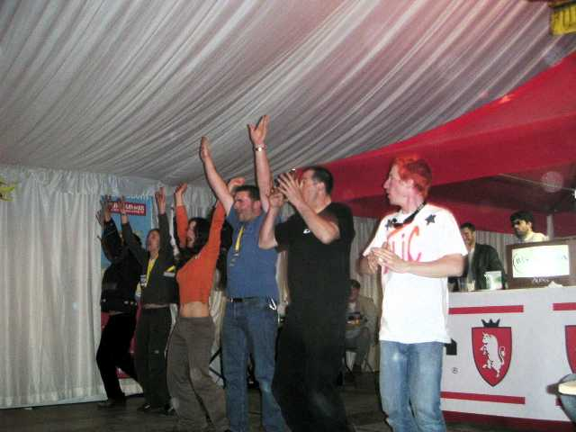
Alors dans la tente, on organise des distractions. Les FLICs ne sont jamais les derniers à faire de l'animation !

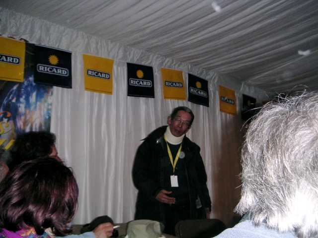
Mais Yassou a l'air de souffrir de partout et avec le froid et l'humidité, ça ne va pas s'arranger !

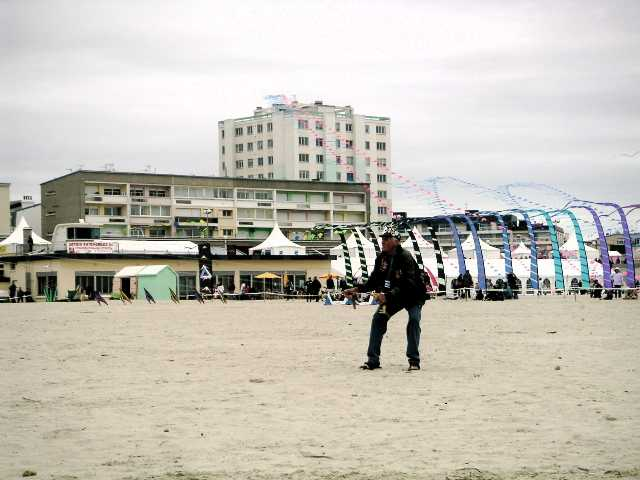
La pluie cesse par moments et on recommence à voler. Ray Bethel répond toujours présent, et exécute avec brio son numéro à 3 cerfs-volants même s'il boite un peu. Mais son coup de hanche est toujours bon !

Patrick Mouchague a monté son spectaculaire triangle de 80 m de tour (je vous laisse calculer le coté). Bien sûr, il faut 2 ancrages (et un cerf-volant !).

Voici un Calomil sur le plan de Christian Bécot, mais modifié avec 2 parois de plus à l'arrière. Intérêt pas évident ?

La surface de démo est gardée par des vaches qui essayent vainement d'atteindre l'herbe pourtant bien haute !

Mais ces pauvres bêtes ne sont jamais traites ! Regardez ces mamelles gonflées, elles doivent bien souffrir !

L'équipe suisse a sorti par petit vent de splendides papillons de plusieurs mètres.

Les indiens ont sorti de magnifiques grands cerfs-volants très figuratifs et très stables.

Divinités ou guerriers, je ne suis pas très fort sur leur mythologie...

Ce qu'on fait doit être bien car on a vu souvent des télés et des journalistes.

Bruno fait aussi de la photo aérienne par cerf-volant !

Le Capitaine Pic a monté sur la promenade son bassin à bateaux, tous très bien réalisés. Il y a même des ventilos comme à Bercy pour le cas où le vent tomberait, et c'est arrivé plusieurs fois.

Sur la promenade aussi, les "camping-cars" des cervolistes. Je mets des guillemets car entre ma p'tite camionnette et cet engin indéfinissable (semi-remorque ?), on ne joue pas dans la même cour !

Evidemment, pour le passage, ça commence à être réduit aux piétons...

Patrick en profite pour fêter son anniversaire à l'abri (relatif) du vent.

Entre les camping-cars, mais à l'échelle au-dessous, Jean-Marc monte son char à cerf-volant. Mais pourquoi 4 roues ?

Et tous les morceaux tiennent dans la petite remorque qui a quand même été pourvue d'appendices devant et derrière et dessous ! Dessus, pas moyen y a le tandem ! Les 4 roues, c'est parce que Jean-Marc a aussi un char remorque qui s'accroche derrière le premier, vous aviez trouvé ?

Sur la plage on a quand même sorti de grandes arches, raccordées entre elles !

Dans les jardins du vent, même les cabanes ne résistent pas aux décorateurs...

Ulla a composé ce cadran solaire en marc de café (pour prédire l'avenir ?).

Le soir, dans la tente, vers 22 h, toujours des attractions ! Un bon violoncelliste qui animera aussi le début du vol de nuit. Il est courageux car les spectateurs continuent souvent de discuter et rigoler de leur côté !

Gérard fera même un strip (incomplet je vous rassure) en macho hyper-viril ! Pour être politiquement correct, je ne montre que le début (en fait, mes batteries ont lâché...).

Le lendemain c'était le tour des filles qui se vengeaient.

David Gomberg, président de l'AKA américaine, suivait le spectacle avec attention !

Il y a eu aussi le club des danseurs "country". J'aime bien la musique Country, mais leurs options musicales ne ressemblaient pas à ce que j'entends d'habitude. Mais je ne suis pas un grand connaisseur.

Evidemment pour danser "country", il faut le chapeau, le gilet et les bottes en lézard brodées.

Le vendredi soir, au Kursaal, soirée de gala. En attendant que ça ouvre, on a pu s'apitoyer sur ce malheureux, enfermé sur le balcon par sa famille !

Après le repas, danse tous types, à commencer par une farandole effrénée. (NB : la photo n'est évidemment pas de moi, et je ne dénoncerai pas l'auteur).

Même les indiens s'y sont mis, dans un style particulier où l'ondulation des bras joue un grand rôle.

Les Boursalou (orthographe non garantie) n'ont pas hésité à entrer en piste pendant la partie "danses classiques".

Les Flics ont fait un show de Révo indoor, mais les cerfs-volants étaient un peu trop grands et la salle un peu trop basse pour que les révos passent tout droit. Il fallait le faire !

Peter Lynn n'était pas le dernier, aidé par l'ambiance et, disons les vapeurs de la salle. Mais je crois que Susan a bien participé aussi.

On a revu avec grand plaisir la magnifique aiguille de Pierre Fabre, mais lui n'était pas là.

Le soir, vol de nuit ! Pas mal de monde en l'air, éclairage suffisant mais sans plus pour des cerfs-volants aussi nombreux.

J'avais cassé mon Albatros, j'ai pris le Condor, mais le rouge la nuit, c'est pas terrible !

Le lendemain, temps idyllique ! On a recommencé à bien voler, avec mes oiseaux, les mégabites, les nombreux personnages de Marco qui continue à bosser en bas, etc.

Il y avait même un grand soleil qui louchait sur le festival.

De l'autre coté les créations de Peter Lynn et bien d'autres, pendant que les teams présentaient leurs shows sur le terrain central.

Cette imposante et magnifique baleine est beaucoup plus belle que celle en flow-form modifié des anglais. Au contraire de ce dernier, ce n'est pourtant pas un vrai cerf-volant, mais tant pis, je la préfère quand même...

Nous avons même été survolés par un ballon photo ! Gonflé à l'hélium, il tire très peu sur sa ligne (1 ou 2 kg). Il est très sûr et peut voler même en ville. L'appareil photo a un format 4,5x6 cm professionnel. Le ballon n'est jamais dégonflé et rentre dans un camion spécialement aménagé !

Christian Bécot aussi a fait voler son matériel, qui fait peut-être moins pro mais est tout aussi efficace dans son domaine (sauf par vent nul, évidemment).

Dernier jour, on finit mieux qu'on n'a commencé : beau temps, pas trop froid, un petit vent régulier de la mer, bien perpendiculaire à la côte, des conditions rêvées.

Un peu la concentration de Fanö, pas sur 15 km comme là-bas, mais en tous cas sur la longueur du festival.

Enfin Gérard peut se décontracter un peu, le festival a bien marché dans l'ensemble, en tous cas les week-ends.
On peut dire qu'on a fini en beauté :

PS : surtout que lundi matin, il tombait des cordes !